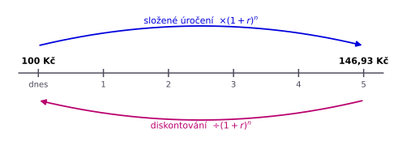
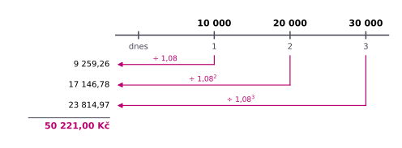
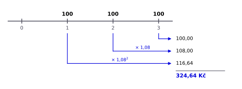

8 Časová hodnota peněz
Studijní materiály
- Dahlquist, J. R., & Knight, R. (2022). Principles of finance. OpenStax, Rice University. https://openstax.org/details/books/principles-finance
- Chapter 7 - Time Value of Money I: Single Payment Value
- Chapter 8 - Time Value of Money II: Equal Multiple Payments
- Chapter 9 - Time Value of Money III: Unequal Multiple Payment Values
Výstupy z učení:
- Vysvětlit, proč mají peníze dnes vyšší hodnotu než v budoucnu, a převést nominální úrokovou míru na reálnou.
- Vypočítat budoucí hodnotu při jednoduchém i složeném úročení.
- Vypočítat současnou hodnotu a dopočítat úrokovou sazbu nebo dobu investice.
- Porovnat úrokové sazby s různou frekvencí úročení pomocí efektivní úrokové míry.
- Ocenit sérii peněžních toků, anuitu a perpetuitu a vypočítat splátku úvěru.
Značení:
| Symbol | Význam |
|---|---|
| \(PV\) | současná hodnota (present value), tedy hodnota dnes |
| \(FV\) | budoucí hodnota (future value) |
| \(r\) | úroková sazba za jedno období (8 % = 0,08) |
| \(n\) | počet období, většinou let |
| \(m\) | počet úrokových období za rok |
| \(PMT\) | pravidelná platba anuity |
| \(C\), \(g\) | platba perpetuity a tempo jejího růstu |
| \(CF_t\) | peněžní tok v čase \(t\) |
| \(i\), \(\pi\) | nominální úroková míra a inflace (Fisherova rovnice) |
8.1 Úvod do časové hodnoty peněz
Chtěli byste 1 000 Kč dnes, nebo za rok? Skoro každý si vybere dnes, a to ze tří důvodů. Peníze dnes můžeme hned utratit (preference okamžité spotřeby), slíbená budoucí platba nemusí vůbec přijít (riziko platebního selhání) a peníze, které máme dnes, můžeme investovat a za rok jich mít víc (potenciál zhodnocení). Peníze dnes jsou proto hodnotnější než stejná částka v budoucnu. Tomuto principu se říká časová hodnota peněz (TVM, time value of money).
Na časové hodnotě peněz stojí celé finance: oceňování dluhopisů a akcií, rozhodování o investicích, splácení úvěrů i spoření na důchod. Plyne z ní i nejdůležitější pravidlo této kapitoly: sčítat a porovnávat lze jen peníze ve stejném čase.
Odměně za zapůjčení peněz vyjádřené v korunách říkáme úrok, vyjádřené v procentech úroková míra. Konkrétní úroková míra určitého produktu, třeba spořicího účtu nebo hypotéky, je úroková sazba. Způsob, jakým se úroky počítají a připisují, se nazývá úročení.
8.1.1 Nominální a reálná úroková míra
Úroková sazba, kterou vám banka slíbí, je nominální úroková míra. Když ale mezitím rostou ceny, koupíte si za úspory méně, než ukazuje zůstatek na účtu. O kolik si skutečně polepšíte, ukazuje reálná úroková míra, tedy nominální úroková míra očištěná o inflaci (inflaci jsme probírali v týdnu 2). Vztah mezi nimi popisuje Fisherova rovnice:
\[ i = r + \pi \]
kde \(i\) je nominální úroková míra, \(r\) reálná úroková míra a \(\pi\) očekávaná inflace. Spořicí účet s úrokem 4 % při inflaci 2,5 % tedy reálně vynáší jen \(4\% - 2{,}5\% = 1{,}5\%\).
Rovnice \(i = r + \pi\) je zjednodušení, které dobře funguje při nízké inflaci a se kterým počítáme v příkladech. Přesně platí \((1 + i) = (1 + r) \times (1 + \pi)\).
Příklad
V roce 2022 byla průměrná inflace v ČR 15,1 %. Jaký byl reálný výnos spořicího účtu s úrokem 5 %?
Výpočet zjednodušeně a přesně:
\[ \begin{aligned} r &\approx 5\% - 15{,}1\% = -10{,}1\% \\ r &= \frac{1{,}05}{1{,}151} - 1 = -8{,}8\% \end{aligned} \]
Peníze na účtu tak za jediný rok reálně ztratily téměř desetinu hodnoty.
8.2 Budoucí hodnota
Když dnes uložíte 100 Kč na účet s úrokem 8 % ročně, za rok budete mít 108 Kč. Tato částka je budoucí hodnota (FV) vkladu. Kolik budete mít za více let, záleží na tom, jak se úroky připisují.
8.2.1 Jednoduché úročení
Při jednoduchém úročení se úrok počítá vždy jen z původního vkladu (jistiny). Každý rok tak přibude stejná částka: vklad 100 Kč přinese 8 Kč ročně a za dva roky budete mít \(100 + 8 + 8 = 116\) Kč.
\[ FV = PV \times (1 + r \times n) \]
V praxi se jednoduché úročení používá hlavně u krátkodobých vkladů a úvěrů do jednoho roku. Dobu pak zadáváme jako zlomek roku, třeba 3 měsíce jako \(n = 3/12\).
8.2.2 Složené úročení
Pokud úroky necháte na účtu, v dalším roce se úročí i ony. Při složeném úročení se tak úročí jistina i všechny dosud připsané úroky. Po dvou letech máte \(100 \times 1{,}08 \times 1{,}08 = 116{,}64\) Kč a po \(n\) letech:
\[ FV = PV \times (1 + r)^n \]
Rozdíl oproti jednoduchému úročení je zpočátku malý, ale s časem rychle roste. Po 40 letech vzroste 100 Kč při jednoduchém úročení na 420 Kč, při složeném na 2 172 Kč. Proto se o složeném úročení mluví jako o „úroku z úroku“ a proto se vyplatí začít spořit co nejdříve.
Pro období delší než jeden rok se v praxi téměř vždy používá složené úročení. Pokud příklad neuvádí, o jaké úročení jde, počítejte se složeným.
Příklad
Uložíte 50 000 Kč na 10 let s úrokem 4 % ročně. Kolik budete mít při jednoduchém a kolik při složeném úročení?
\[ FV = 50\,000 \times (1 + 0{,}04 \times 10) = 70\,000 \] \[ FV = 50\,000 \times 1{,}04^{10} = 74\,012{,}21 \]
8.3 Současná hodnota
Často známe částku, kterou dostaneme v budoucnu, a ptáme se opačně: kolik má hodnotu dnes? Odpověď dostaneme obrácením složeného úročení. Budoucí částku diskontujeme zpět do současnosti a výsledkem je současná hodnota (PV).

\[ PV = \frac{FV}{(1+r)^n} \]
Jakou hodnotu má dnes slib, že za 7 let dostanete 100 Kč, pokud byste jinak mohli z peněz získat úrok 8 % ročně? Jen \(100 / 1{,}08^7 = 58{,}35\) Kč. Kdybyste 100 Kč dostali už za rok, bylo by to \(100 / 1{,}08 = 92{,}59\) Kč. Čím je platba vzdálenější a úroková sazba vyšší, tím menší je její dnešní hodnota. Na diskontování stojí oceňování dluhopisů, akcií i investičních projektů v dalších týdnech.
Diskontování je úročení pozpátku. Sazba, kterou při něm používáme, se proto často nazývá diskontní sazba. Při jednoduchém úročení diskontujeme vzorcem \(PV = FV / (1 + r \times n)\).
Příklad
Rodiče vám slíbí 200 000 Kč k 30. narozeninám, tedy za 10 let. Kolik je tento slib dnes, pokud byste peníze mohli investovat s výnosem 5 % ročně?
\[ PV = \frac{200\,000}{1{,}05^{10}} = 122\,782{,}65 \]
8.3.1 Výpočet úrokové sazby a doby
Vzorec pro složené úročení obsahuje čtyři veličiny: \(PV\), \(FV\), \(r\) a \(n\). Když známe tři, čtvrtou dopočítáme. Úrokovou sazbu a počet období získáme úpravou vzorce:
\[ r = \left(\frac{FV}{PV}\right)^{1/n} - 1 \qquad \qquad n = \frac{\ln(FV / PV)}{\ln(1 + r)} \]
Investice 100 000 Kč, která má za 5 let hodnotu 150 000 Kč, vynesla v průměru \((150\,000 / 100\,000)^{1/5} - 1 = 8{,}45\%\) ročně. Vklad se při úroku 8 % zdvojnásobí za \(\ln 2 / \ln 1{,}08 = 9{,}01\) let.
Pravidlo 72: dobu zdvojnásobení rychle odhadnete jako 72 děleno úrokovou sazbou v procentech, např. \(72 / 8 = 9\) let.
8.4 Úročení častěji než jednou ročně
Banky často připisují úroky měsíčně nebo čtvrtletně, úrokovou sazbu ale vždy uvádějí jako roční (p.a., per annum). Při úročení \(m\)-krát ročně se proto v každém období úročí sazbou \(r / m\) a za \(n\) let je období celkem \(n \times m\):
\[ FV = PV \times \left(1 + \frac{r}{m}\right)^{n \times m} \]
Vklad 100 Kč s úrokem 8 % vzroste za 15 let při ročním připisování úroků na 317,22 Kč, při čtvrtletním na 328,10 Kč a při měsíčním na 330,69 Kč. Čím častěji se úroky připisují, tím dříve se z nich začnou počítat další úroky.
8.4.1 Efektivní úroková míra
Je výhodnější účet s úrokem 5 % připisovaným jednou ročně, nebo účet s 4,9 % připisovanými měsíčně? Ze samotných sazeb to nepoznáme. Obě proto převedeme na efektivní úrokovou míru (EIR, effective interest rate). Ta udává, o kolik procent peníze za rok skutečně vzrostou, a zohledňuje tedy i frekvenci úročení:
\[ EIR = \left(1 + \frac{r}{m}\right)^m - 1 \]
kde \(r\) je nominální roční sazba. Nominální sazbě 5 % odpovídají podle frekvence úročení tyto efektivní sazby:
| Úročení | \(m\) | EIR |
|---|---|---|
| roční | 1 | 5,00 % |
| pololetní | 2 | 5,06 % |
| čtvrtletní | 4 | 5,09 % |
| měsíční | 12 | 5,12 % |
U spotřebitelských úvěrů se uvádí RPSN (roční procentní sazba nákladů). Kromě frekvence splácení zahrnuje i poplatky, a proto je pro srovnání úvěrů lepší než samotná úroková sazba.
Příklad
Banka A nabízí spořicí účet s úrokem 5 % p.a. a ročním připisováním úroků, banka B 4,9 % p.a. s měsíčním připisováním. Který účet je výhodnější?
\[ EIR_A = 5\% \qquad \qquad EIR_B = \left(1 + \frac{0{,}049}{12}\right)^{12} - 1 = 5{,}01\% \]
Výhodnější je banka B, přestože nabízí nižší úrokovou sazbu.
8.5 Série peněžních toků
Většina investic nepřináší jednu platbu, ale řadu plateb v různých časech. Protože sčítat lze jen peníze ve stejném čase, převedeme nejdřív každou platbu na současnou hodnotu a teprve potom je sečteme. Současná hodnota série peněžních toků je tedy součet současných hodnot jednotlivých toků:
\[ PV = \frac{CF_1}{(1+r)^1} + \frac{CF_2}{(1+r)^2} + \dots + \frac{CF_n}{(1+r)^n} = \sum^n_{t=1} \frac{CF_t}{(1+r)^t} \]
Pomůže zakreslit si peněžní toky na časovou osu a každý diskontovat zvlášť podle toho, kdy nastane.
Příklad
Kamarád vám nabízí, že vám za půjčku vrátí 10 000 Kč za rok, 20 000 Kč za dva roky a 30 000 Kč za tři roky. Kolik mu nejvýše půjčíte dnes, pokud byste jinak mohli peníze investovat s výnosem 8 % ročně?

\[ \begin{aligned} PV &= \frac{10\,000}{1{,}08^1} + \frac{20\,000}{1{,}08^2} + \frac{30\,000}{1{,}08^3} \\ &= 9\,259{,}26 + 17\,146{,}78 + 23\,814{,}97 = 50\,221 \end{aligned} \]
Půjčíte mu nejvýše 50 221 Kč, přestože vám vrátí celkem 60 000 Kč.
Stejně budeme oceňovat dluhopisy (týden 9), akcie (týden 10) i investiční projekty firem (týden 12).
8.6 Anuita
Mnoho plateb se opakuje ve stejné výši: splátky hypotéky, pravidelné spoření, nájem nebo důchod. Sérii stejných plateb v pravidelných intervalech říkáme anuita. Její hodnotu bychom mohli spočítat jako u každé jiné série, ale pro anuitu stačí jeden vzorec. Podle toho, kdy platby nastávají, rozlišujeme anuitu polhůtní s platbami na konci každého období (např. splátky úvěru) a anuitu předlhůtní s platbami na začátku období (např. nájem). U anuit počítáme vždy se složeným úročením.
| Čas | 0 | 1 | 2 | 3 |
|---|---|---|---|---|
| Anuita polhůtní | PMT | PMT | PMT | |
| Anuita předlhůtní | PMT | PMT | PMT |
8.6.1 Budoucí hodnota anuity
Na konci každého roku uložíte 100 Kč s úrokem 8 %. Kolik budete mít za tři roky? První vklad se úročí dva roky, druhý jeden rok a poslední vůbec:

Pro libovolný počet plateb tento součet zkracuje vzorec pro budoucí hodnotu anuity (FVA, future value of an annuity):
\[ \text{FVA} = \text{PMT} \times \frac{(1 + r)^n - 1}{r} \]
Pro naše spoření vychází \(100 \times \frac{1{,}08^3 - 1}{0{,}08} = 324{,}64\) Kč.
U předlhůtní anuity přichází každá platba o období dřív, a úročí se proto o jedno období déle. Vzorec pro polhůtní anuitu proto vynásobíme \((1 + r)\):
\[ \text{FVA} = \text{PMT} \times \frac{(1 + r)^n - 1}{r} \times (1 + r) \]
Kdybyste ukládali vždy na začátku roku, měli byste za tři roky \(100 \times \frac{1{,}08^3 - 1}{0{,}08} \times 1{,}08 = 350{,}61\) Kč.
Příklad
Od 25 let si na konci každého roku odložíte 30 000 Kč do fondu s výnosem 6 % ročně. Kolik budete mít v 65 letech?
\[ \text{FVA} = 30\,000 \times \frac{1{,}06^{40} - 1}{0{,}06} = 4\,642\,859 \]
Sami vložíte 1,2 mil. Kč, zbylých 3,4 mil. Kč tvoří výnosy. Kdybyste začali až ve 35 letech, měli byste jen 2 371 746 Kč.
Jak dlouho trvá naspořit milion?
Počet let, než investice 10 000 Kč (jednorázově, nebo každý rok na konci roku) vzroste na 1 000 000 Kč:
| Výnos (% ročně) | Jednorázově | Každý rok |
|---|---|---|
| 5 | 94,4 | 36,7 |
| 10 | 48,3 | 25,2 |
| 15 | 33,0 | 19,8 |
| 20 | 25,3 | 16,7 |
8.6.2 Současná hodnota anuity
Kolik byste dnes zaplatili za investici, která vám na konci každého z příštích tří let vyplatí 1 000 Kč, pokud jinde dosáhnete výnosu 8 %? Stejně jako u každé série sečteme současné hodnoty plateb: \(1\,000 / 1{,}08 + 1\,000 / 1{,}08^2 + 1\,000 / 1{,}08^3 = 2\,577{,}10\) Kč. Vzorec pro současnou hodnotu anuity (PVA, present value of an annuity) to zvládne najednou:
\[ \text{PVA} = \text{PMT} \times \frac{1 - \frac{1}{(1 + r)^n}}{r} \]
U předlhůtní anuity přichází každá platba o období dřív, a diskontuje se proto o jedno období méně. Vzorec pro polhůtní anuitu proto opět vynásobíme \((1 + r)\):
\[ \text{PVA} = \text{PMT} \times \frac{1 - \frac{1}{(1 + r)^n}}{r} \times (1 + r) \]
Kdyby investice vyplácela 1 000 Kč vždy na začátku roku, měla by dnes hodnotu \(1\,000 \times \frac{1 - \frac{1}{1{,}08^3}}{0{,}08} \times 1{,}08 = 2\,783{,}26\) Kč.
Příklad
Vyhráli jste v loterii a můžete si vybrat: 1 000 000 Kč hned, nebo 100 000 Kč na konci každého roku po dobu 15 let. Co je výhodnější, pokud byste peníze mohli investovat s výnosem 5 % ročně?
\[ \text{PVA} = 100\,000 \times \frac{1 - \frac{1}{1{,}05^{15}}}{0{,}05} = 1\,037\,966 \]
Splátky mají dnes vyšší hodnotu než jednorázová výplata, vyplatí se tedy je zvolit. Při výnosu 6 % by ale měly hodnotu jen 971 225 Kč a lepší by byl milion hned.
8.6.3 Splátka úvěru
Úvěry se většinou splácejí stejnými pravidelnými splátkami. Pro banku je úvěr investice: dnes vám půjčí peníze a výměnou dostane anuitu splátek. Výše úvěru se proto rovná současné hodnotě všech splátek a splátku dostaneme vyjádřením PMT ze vzorce pro PVA:
\[ \text{PMT} = \frac{\text{PVA} \times r}{1 - \frac{1}{(1 + r)^n}} \]
Hypotéky a spotřebitelské úvěry se splácejí měsíčně. Použijeme proto měsíční sazbu \(r / 12\) a počet splátek \(n \times 12\).
Příklad
Berete si hypotéku 3 000 000 Kč na 30 let s úrokovou sazbou 5 % p.a. a měsíčními splátkami. Jaká bude měsíční splátka?
\[ \text{PMT} = \frac{3\,000\,000 \times \frac{0{,}05}{12}}{1 - \frac{1}{(1 + \frac{0{,}05}{12})^{360}}} = 16\,104{,}65 \]
Za 30 let zaplatíte celkem \(360 \times 16\,104{,}65 = 5\,797\,674\) Kč, z toho téměř 2,8 mil. Kč tvoří úroky.
Na začátku splácení tvoří většinu splátky úrok. Z první splátky hypotéky v příkladu jde na úrok \(3\,000\,000 \times 0{,}05 / 12 = 12\,500\) Kč a dluh se sníží jen o 3 605 Kč.
8.7 Perpetuita
Co když platby nikdy neskončí? Nekonečné sérii stejných plateb říkáme perpetuita. Její hodnota přesto není nekonečná, protože vzdálené platby mají dnes téměř nulovou hodnotu: při 5 % má platba za 100 let dnes hodnotu necelého procenta své výše. Ve vzorci pro současnou hodnotu anuity se pro \(n \to \infty\) člen \(\frac{1}{(1 + r)^n}\) blíží nule a zbude jen:
\[ PV = \frac{C}{r} \]
kde \(C\) je platba na konci každého období. Vzorec má jednoduchý výklad: když dnes uložíte částku \(C / r\), úrok z ní je každý rok přesně \(C\). Můžete ho tedy navždy vybírat a vklad zůstane nedotčený. Perpetuitou se oceňují například preferenční akcie s pevnou dividendou.
Příklad
Nadace chce každý rok navždy vyplácet stipendium 50 000 Kč, poprvé za rok. Kolik musí dnes vložit, pokud peníze investuje s výnosem 6 % ročně?
\[ PV = \frac{50\,000}{0{,}06} = 833\,333 \]
8.7.1 Rostoucí perpetuita
Stipendium s pevnou výší ale každým rokem ztrácí inflací na hodnotě. Pokud platby rostou stálým tempem \(g\), jde o rostoucí perpetuitu:
\[ PV = \frac{C_1}{r - g} \]
kde \(C_1\) je první platba na konci prvního období. Vzorec platí jen pro \(r > g\). Kdyby platby rostly rychleji, než je diskontujeme, měla by perpetuita nekonečnou hodnotu.
Příklad
Nadace chce, aby stipendium rostlo s inflací o 2 % ročně. Kolik musí vložit teď?
\[ PV = \frac{50\,000}{0{,}06 - 0{,}02} = 1\,250\,000 \]
Růst stipendia o 2 % ročně tak nadaci vyjde o víc než 400 000 Kč dráž.
Stejný vzorec použijeme v týdnu 10 pro ocenění akcií (Gordonův model).
8.8 Shrnutí
- Peníze dnes mají vyšší hodnotu než stejná částka v budoucnu, proto lze sčítat a porovnávat pouze peníze ve stejném čase.
- Složené úročení roste exponenciálně a na dlouhém horizontu je rozdíl oproti jednoduchému úročení obrovský.
- Jednoduché úročení se v praxi používá hlavně krátkodobě, do jednoho roku. Pokud příklad neuvádí, o jaké úročení jde, počítáme se složeným.
- Diskontování (výpočet PV) je opačný postup k úročení (výpočet FV).
- Úrokové sazby s různou frekvencí úročení porovnáváme pomocí efektivní úrokové míry.
- Anuita a perpetuita jsou zkratky pro výpočet hodnoty mnoha stejných peněžních toků.
| Výpočet | Vzorec |
|---|---|
| Reálná úroková míra | \(r = i - \pi\) |
| Jednoduché úročení | \(FV = PV \times (1 + r \times n)\) |
| Složené úročení | \(FV = PV \times (1 + r)^n\) |
| Současná hodnota | \(PV = \dfrac{FV}{(1+r)^n}\) |
| Úroková sazba | \(r = \left(\dfrac{FV}{PV}\right)^{1/n} - 1\) |
| Počet období | \(n = \dfrac{\ln(FV / PV)}{\ln(1 + r)}\) |
| Úročení \(m\)-krát ročně | \(FV = PV \times (1 + \dfrac{r}{m})^{n \times m}\) |
| Efektivní úroková míra | \(EIR = \left(1 + \dfrac{r}{m}\right)^m - 1\) |
| Série peněžních toků | \(PV = \sum^n_{t=1} \dfrac{CF_t}{(1+r)^t}\) |
| Budoucí hodnota anuity | \(\text{FVA} = \text{PMT} \times \dfrac{(1 + r)^n - 1}{r}\) |
| Současná hodnota anuity | \(\text{PVA} = \text{PMT} \times \dfrac{1 - \dfrac{1}{(1 + r)^n}}{r}\) |
| Předlhůtní anuita | výsledek polhůtní anuity \(\times (1 + r)\) |
| Splátka úvěru | \(\text{PMT} = \dfrac{\text{PVA} \times r}{1 - \dfrac{1}{(1 + r)^n}}\) |
| Perpetuita | \(PV = \dfrac{C}{r}\) |
| Rostoucí perpetuita | \(PV = \dfrac{C_1}{r - g}\) |
8.9 Příklady k procvičení
Pokud příklad neuvádí, o jaké úročení jde, počítejte se složeným úročením.
8.9.1 Základní pojmy
Jaká je reálná úroková míra na termínovaném účtu, pokud je nominální úroková míra na tomto účtu 12,5 % a míra inflace činí 10,5 %?
Inflaci jste k úroku přičetli. Reálnou míru dostaneme, když inflaci od nominální míry odečteme.
Zobrazit řešení
Z Fisherovy rovnice \(i = r + \pi\) vyjádříme \(r = i - \pi\). Zjednodušeně a přesně:
\[ \begin{aligned} r &\approx 12{,}5\% - 10{,}5\% = 2\% \\ r &= \frac{1{,}125}{1{,}105} - 1 = 1{,}81\% \end{aligned} \]
Reálná úroková míra je přibližně 2 %.
Reálná úroková míra činí −3 %, nominální úroková míra byla 5,5 %. Jaká byla v daném roce inflace?
Pozor na znaménko: reálná míra je záporná, takže \(5{,}5\% - (-3\%) = 5{,}5\% + 3\%\).
Zobrazit řešení
Z Fisherovy rovnice vyjádříme inflaci \(\pi = i - r\):
\[ \begin{aligned} \pi &\approx 5{,}5\% - (-3\%) = 8{,}5\% \\ \pi &= \frac{1{,}055}{0{,}97} - 1 = 8{,}76\% \end{aligned} \]
Inflace byla přibližně 8,5 %.
Jaká je reálná úroková míra, pokud je nominální úroková míra 4 % a očekávaná inflace v daném roce 10 %?
Pozor na znaménko. Inflace je vyšší než úrok, takže reálná míra vychází záporná.
Zobrazit řešení
\[ \begin{aligned} r &\approx 4\% - 10\% = -6\% \\ r &= \frac{1{,}04}{1{,}10} - 1 = -5{,}45\% \end{aligned} \]
Reálná úroková míra je přibližně −6 %: peníze na účtu reálně ztrácejí hodnotu.
Investujete do dluhopisu, který vyplácí roční úrok 2,65 %. Jaká bude vaše reálná úroková míra, pokud inflace dosahuje 7,85 % ročně?
Pozor na znaménko. Inflace je vyšší než úrok, takže reálná míra vychází záporná.
Zobrazit řešení
\[ \begin{aligned} r &\approx 2{,}65\% - 7{,}85\% = -5{,}2\% \\ r &= \frac{1{,}0265}{1{,}0785} - 1 = -4{,}82\% \end{aligned} \]
Reálná úroková míra je přibližně −5,2 %.
Jakou budete požadovat nominální úrokovou sazbu, pokud chcete získat reálné zhodnocení investice 7,61 % p.a. a očekáváte inflaci 4,42 %? Investici navíc považujete za rizikovou a chcete prémii za riziko ve výši 2,26 %.
Zapomněli jste na prémii za riziko. Za rizikovou investici chcete navíc 2,26 %.
Zobrazit řešení
Nominální sazba musí pokrýt požadovaný reálný výnos, inflaci i prémii za riziko:
\[ \begin{aligned} i &\approx 7{,}61\% + 4{,}42\% + 2{,}26\% = 14{,}29\% \\ i &= 1{,}0761 \times 1{,}0442 - 1 + 0{,}0226 = 14{,}63\% \end{aligned} \]
Budete požadovat přibližně 14,29 %.
8.9.2 Jednoduché úročení
Termínovaný vklad nabízí jednoduché úročení na dobu 3 let s úrokem 7,2 %. Kolik naspoříte při vkladu 150 000 Kč?
Takhle vychází složené úročení, \(150\,000 \times 1{,}072^3\). Zadání ale chce jednoduché: úročí se jen původní vklad.
To je jen úrok. Otázka se ptá na celou částku na účtu, tedy včetně vkladu.
Zobrazit řešení
Při jednoduchém úročení se každý rok úročí jen původní vklad, \(FV = PV \times (1 + r \times n)\):
\[ FV = 150\,000 \times (1 + 0{,}072 \times 3) = 182\,400 \]
Naspoříte 182 400 Kč.
Termínovaný vklad nabízí jednoduché úročení na dobu 5 let s úrokem 3,4 %. Kolik naspoříte při vkladu 300 000 Kč?
Takhle vychází složené úročení, \(300\,000 \times 1{,}034^5\). Zadání ale chce jednoduché: úročí se jen původní vklad.
To je jen úrok. Otázka se ptá na celou částku na účtu, tedy včetně vkladu.
Zobrazit řešení
\[ FV = 300\,000 \times (1 + 0{,}034 \times 5) = 351\,000 \]
Naspoříte 351 000 Kč.
Investujete 72 000 Kč do termínovaného vkladu s roční úrokovou sazbou 1,4 %. Úroky jsou vypláceny jednou ročně a úročí se pouze jistina. Kolik budete mít naspořeno za 17 let?
Takhle vychází složené úročení, \(72\,000 \times 1{,}014^{17}\). Zadání ale říká, že se úročí pouze jistina.
To je jen úrok. Otázka se ptá na celou částku na účtu, tedy včetně vkladu.
Zobrazit řešení
Úročí se pouze jistina, jde tedy o jednoduché úročení:
\[ FV = 72\,000 \times (1 + 0{,}014 \times 17) = 89\,136 \]
Za 17 let budete mít naspořeno 89 136 Kč.
8.9.3 Složené úročení
Termínovaný vklad nabízí složené úročení na dobu 8 let s úrokem 6,3 %. Kolik naspoříte při vkladu 1 000 000 Kč?
Takhle vychází jednoduché úročení, \(1\,000\,000 \times (1 + 0{,}063 \times 8)\). Při složeném úročení se úročí i úroky připsané v předchozích letech.
To je jen úrok. Otázka se ptá na celou částku na účtu, tedy včetně vkladu.
Zobrazit řešení
Při složeném úročení se každý rok úročí vklad i dříve připsané úroky, takže vklad osmkrát vynásobíme \(1{,}063\):
\[ FV = PV \times (1 + r)^n = 1\,000\,000 \times 1{,}063^8 = 1\,630\,294{,}70 \]
Za 8 let naspoříte 1 630 294,70 Kč.
Termínovaný vklad nabízí složené úročení na dobu 5 let s úrokem 4 %. Kolik naspoříte při vkladu 300 000 Kč?
Takhle vychází jednoduché úročení, \(300\,000 \times (1 + 0{,}04 \times 5)\). Při složeném úročení se úročí i úroky připsané v předchozích letech.
To je jen úrok. Otázka se ptá na celou částku na účtu, tedy včetně vkladu.
Zobrazit řešení
\[ FV = PV \times (1 + r)^n = 300\,000 \times 1{,}04^5 = 364\,995{,}87 \]
Naspoříte 364 995,87 Kč, z toho 64 995,87 Kč jsou úroky.
Investujete 65 000 Kč na spořicí účet v bance se sazbou 9,5 % p.a. Úroky jsou vypláceny jednou ročně a úročí se vždy jistina i s úroky. Kolik budete mít naspořeno za 5 let?
Takhle vychází jednoduché úročení, \(65\,000 \times (1 + 0{,}095 \times 5)\). Zadání ale říká, že se úročí jistina i s úroky.
Zobrazit řešení
Úročí se jistina i s úroky, jde tedy o složené úročení:
\[ FV = 65\,000 \times 1{,}095^5 = 102\,325{,}52 \]
Za 5 let budete mít naspořeno 102 325,52 Kč.
Klient si uložil na spořicí účet částku 90 000 Kč při úrokové míře 4,5 % p.a. Kolik si bude moci vyzvednout po 5 letech, pokud jsou úroky připisovány jednou ročně?
Takhle vychází jednoduché úročení, \(90\,000 \times (1 + 0{,}045 \times 5)\). Připsané úroky ale zůstávají na účtu a úročí se dál.
Zobrazit řešení
Připsané úroky zůstávají na účtu a dál se úročí:
\[ FV = 90\,000 \times 1{,}045^5 = 112\,156{,}37 \]
Po 5 letech si klient vyzvedne 112 156,37 Kč.
Jaká byla roční úroková sazba vkladu 20 000 Kč, pokud za 4 roky máme na účtu 23 400 Kč? Úroky byly připisovány jednou ročně a ponechány na účtu k dalšímu zhodnocení.
Takhle vychází jednoduché úročení: 17 % rozdělené rovnoměrně na 4 roky. Úroky se ale úročí dál, a tak na stejné zhodnocení stačí nižší roční sazba.
To je zhodnocení za celé 4 roky, \(23\,400 / 20\,000 = 1{,}17\). Otázka se ptá na roční sazbu.
Zobrazit řešení
Do vzorce pro složené úročení dosadíme, co známe, a vyjádříme \(r\):
\[ \begin{aligned} 20\,000 \times (1 + r)^4 &= 23\,400 \\ (1 + r)^4 &= 1{,}17 \\ r &= 1{,}17^{1/4} - 1 = 0{,}0400 \end{aligned} \]
Roční úroková sazba byla 4,00 %. Čtvrtou odmocninu spočítáte na kalkulačce jako \(1{,}17^{0{,}25}\), nebo dvakrát po sobě stisknete druhou odmocninu.
8.9.4 Diskontování
Investice vám za 5 let vyplatí 13 000 Kč. Jaká je současná hodnota této investice, pokud požadujete výnos 1,31 % p.a.? Počítejte se složeným úročením.
Takhle vychází budoucí hodnota: částku jste úročili, místo abyste ji diskontovali. Současná hodnota musí být nižší než 13 000 Kč.
Takhle vychází jednoduché úročení, \(13\,000 / (1 + 0{,}0131 \times 5)\). Zadání ale chce složené.
Zobrazit řešení
Budoucí částku diskontujeme o 5 let zpět:
\[ PV = \frac{FV}{(1 + r)^n} = \frac{13\,000}{1{,}0131^5} = 12\,180{,}97 \]
Současná hodnota investice je 12 180,97 Kč.
Banka odkoupila směnku v hodnotě 500 000 Kč s dobou splatnosti 1 rok. Jakou diskontní sazbu banka používá, pokud za směnku vyplatila 480 000 Kč?
Takhle vychází rozdíl 20 000 Kč vztažený k hodnotě směnky. Výnos banky ale počítáme z částky, kterou zaplatila: \(20\,000 / 480\,000\).
Zobrazit řešení
Banka dnes zaplatí 480 000 Kč a za rok dostane 500 000 Kč. Z \(PV = FV / (1 + r)\) vyjádříme \(r\):
\[ r = \frac{FV}{PV} - 1 = \frac{500\,000}{480\,000} - 1 = 4{,}17\% \]
Banka používá diskontní sazbu 4,17 %.
Dlužník postupuje bance směnku na 100 000 Kč a zavazuje se ji splatit za 3 měsíce. Jakou má banka diskontní sazbu, pokud dlužník obdrží úvěr ve výši 97 000 Kč? Počítejte s jednoduchým úročením.
Takhle vychází složené úročení. Zadání ale chce jednoduché.
To je výnos za 3 měsíce. Otázka se ptá na roční sazbu.
Zobrazit řešení
Při jednoduchém úročení je doba zlomek roku, \(n = 3/12\):
\[ \begin{aligned} 97\,000 \times \left(1 + r \times \tfrac{3}{12}\right) &= 100\,000 \\ r &= \left(\frac{100\,000}{97\,000} - 1\right) \times \frac{12}{3} = 12{,}37\% \end{aligned} \]
Banka má diskontní sazbu 12,37 %.
8.9.5 Výpočet úrokové sazby a doby investice
Za jak dlouho se vklad 50 000 Kč zdvojnásobí při úroku 6 % p.a., pokud jsou úroky připisovány jednou ročně?
Takhle vychází jednoduché úročení (\(1 / 0{,}06\)). Úroky se ale připisují a dál úročí, takže se vklad zdvojnásobí dřív.
To je odhad podle pravidla 72 (\(72 / 6\)). Přesný výsledek dostanete logaritmem.
Zobrazit řešení
Hledáme \(n\), pro které \(50\,000 \times 1{,}06^n = 100\,000\):
\[ n = \frac{\ln(FV / PV)}{\ln(1 + r)} = \frac{\ln 2}{\ln 1{,}06} = 11{,}9 \]
Vklad se zdvojnásobí přibližně za 11,9 roku.
Akcie koupená za 400 Kč má po 6 letech hodnotu 700 Kč. Jaký byl průměrný roční výnos? Počítejte se složeným úročením.
Takhle vychází prostý průměr: 75 % za 6 let vydělených šesti. Výnosy se ale skládají, takže průměrný roční výnos je nižší.
To je výnos za celých 6 let. Otázka se ptá na průměrný roční výnos.
Zobrazit řešení
\[ \begin{aligned} 400 \times (1 + r)^6 &= 700 \\ r &= \left(\frac{700}{400}\right)^{1/6} - 1 = 9{,}78\% \end{aligned} \]
Průměrný roční výnos byl 9,78 %.
8.9.6 Kratší časové intervaly než jeden rok
Investujete 99 000 Kč na spořicí účet v bance s roční úrokovou mírou 7,24 %. Úroky jsou vypláceny čtvrtletně a úročí se vždy jistina i s úroky. Kolik budete mít naspořeno za 12 let?
Takhle vychází roční připisování úroků. Při čtvrtletním je sazba za období \(r / 4\) a období je \(12 \times 4\).
Zobrazit řešení
Za čtvrtletí se připíše \(7{,}24\% / 4 = 1{,}81\%\) a za 12 let proběhne \(12 \times 4 = 48\) čtvrtletí:
\[ FV = 99\,000 \times 1{,}0181^{48} = 234\,194{,}23 \]
Za 12 let budete mít naspořeno 234 194,23 Kč.
Investujete 85 000 Kč na spořicí účet v bance s roční úrokovou mírou 14,23 %. Úroky jsou vypláceny měsíčně a úročí se vždy jistina i s úroky. Kolik budete mít naspořeno za 15 let?
Takhle vychází roční připisování úroků. Při měsíčním je sazba za období \(r / 12\) a období je \(15 \times 12\).
Zobrazit řešení
Měsíční sazba je \(r / 12\) a za 15 let proběhne \(15 \times 12 = 180\) měsíců:
\[ FV = 85\,000 \times \left(1 + \frac{0{,}1423}{12}\right)^{180} = 709\,524{,}21 \]
Za 15 let budete mít naspořeno 709 524,21 Kč.
Vypočítejte dobu splatnosti při jednoduchém úročení, pokud vklad ve výši 3 960 Kč vzrostl na 4 000 Kč. Úroková míra činí 2 % p.a.
To je zhodnocení za celou dobu (1,01 %). Dobu dostanete, když ho vydělíte roční sazbou.
Zobrazit řešení
Z \(FV = PV \times (1 + r \times n)\) vyjádříme \(n\):
\[ n = \frac{FV / PV - 1}{r} = \frac{4\,000 / 3\,960 - 1}{0{,}02} = 0{,}505 \]
Doba splatnosti je 0,505 roku, tedy zhruba půl roku.
Při jaké úrokové sazbě bude činit úrok z vkladu 100 000 Kč na 7 měsíců 1 500 Kč? Počítejte s jednoduchým úročením.
Takhle vychází složené úročení. Zadání ale chce jednoduché.
To je úrok za 7 měsíců. Sazba se uvádí roční (p.a.), takže ji ještě přepočtěte na celý rok.
Zobrazit řešení
Při jednoduchém úročení je doba zlomek roku, \(n = 7/12\):
\[ \begin{aligned} 100\,000 \times r \times \tfrac{7}{12} &= 1\,500 \\ r &= \frac{1\,500}{100\,000 \times 7/12} = 2{,}57\% \end{aligned} \]
Úroková sazba je 2,57 % p.a.
Na dvouletý termínovaný vklad jste uložili 10 000 Kč. Úroky jsou připisovány pololetně. Kolik si budete moci vybrat za 2 roky, pokud je úroková sazba 4 % p.a.?
Takhle vychází roční připisování úroků, \(10\,000 \times 1{,}04^2\). Úroky se ale připisují pololetně.
Takhle vychází jednoduché úročení. Připsané úroky se ale dál úročí.
Zobrazit řešení
Za pololetí se připíše \(4\% / 2 = 2\%\) a za 2 roky proběhnou 4 pololetí:
\[ FV = 10\,000 \times 1{,}02^4 = 10\,824{,}32 \]
Za 2 roky si budete moci vybrat 10 824,32 Kč.
Při jaké úrokové sazbě se částka 50 000 Kč za 5 let zúročí na 70 000 Kč, pokud jsou úroky připisovány čtvrtletně?
To je efektivní úroková míra, \(1{,}4^{1/5} - 1\). Otázka se ptá na roční sazbu při čtvrtletním připisování.
To je sazba za čtvrtletí. Roční sazbu dostanete, když ji vynásobíte čtyřmi.
Zobrazit řešení
Za 5 let proběhne 20 čtvrtletí. Nejdřív najdeme sazbu za čtvrtletí, pak ji vynásobíme čtyřmi:
\[ \begin{aligned} 50\,000 \times \left(1 + \frac{r}{4}\right)^{20} &= 70\,000 \\ \frac{r}{4} &= 1{,}4^{1/20} - 1 = 0{,}016966 \\ r &= 4 \times 0{,}016966 = 6{,}79\% \end{aligned} \]
Roční úroková sazba je 6,79 %.
Jaký bude za 3 roky rozdíl v konečné výši kapitálu, pokud byl počáteční vklad 120 000 Kč, úroková míra činí 1,5 % p.a. a úroky jsou připisovány pololetně, nebo ročně?
To je konečná částka jedné z variant. Otázka se ptá na rozdíl mezi nimi.
Zobrazit řešení
Pololetně se připisuje 0,75 % šestkrát, ročně 1,5 % třikrát:
\[ \begin{aligned} 120\,000 \times 1{,}0075^6 &= 125\,502{,}27 \\ 120\,000 \times 1{,}015^3 &= 125\,481{,}41 \end{aligned} \]
Pololetní připisování vynese o 20,86 Kč víc.
Chcete si uložit 10 000 Kč na 3 roky. Kterou z následujících možností zvolíte? Spočítejte efektivní úrokovou míru obou možností.
- úroková míra 12 % p.a. a pololetní připisování úroků,
- úroková míra 11 % p.a. a čtvrtletní připisování úroků.
To je nominální sazba. Efektivní úroková míra zohledňuje i to, kolikrát za rok se úroky připisují.
Zobrazit řešení
\[ \begin{aligned} EIR_a &= \left(1 + \frac{0{,}12}{2}\right)^2 - 1 = 12{,}36\% \\ EIR_b &= \left(1 + \frac{0{,}11}{4}\right)^4 - 1 = 11{,}46\% \end{aligned} \]
Zvolíte možnost a. Častější připisování u možnosti b nevyrovná o bod nižší sazbu.
Vaše banka nabízí klientům účet se 4% roční nominální úrokovou mírou a čtvrtletním úročením. Jeden z vašich dobrých klientů však požaduje měsíční úročení. Jakou roční nominální úrokovou sazbu mu nabídnete, chcete-li zachovat pro oba druhy účtů stejné podmínky?
Při stejné nominální sazbě by měsíční úročení vyneslo víc než čtvrtletní. Hledáme sazbu, která dá stejnou efektivní úrokovou míru.
To je efektivní úroková míra účtu se čtvrtletním úročením. Teď najděte nominální sazbu, která při měsíčním úročení dá stejnou efektivní míru.
Zobrazit řešení
Stejné podmínky znamenají stejnou efektivní úrokovou míru. Hledáme \(r\), se kterým dá 12 měsíců totéž co 4 čtvrtletí:
\[ \begin{aligned} \left(1 + \frac{r}{12}\right)^{12} &= \left(1 + \frac{0{,}04}{4}\right)^4 \\ \frac{r}{12} &= 1{,}01^{4/12} - 1 = 0{,}0033223 \\ r &= 12 \times 0{,}0033223 = 3{,}99\% \end{aligned} \]
Klientovi nabídnete 3,99 % p.a. Při měsíčním úročení stačí o něco nižší nominální sazba.
8.9.7 Série peněžních toků
Projekt vám vyplatí 15 000 Kč za 1 rok, 25 000 Kč za 2 roky a 40 000 Kč za 3 roky. Jaká je současná hodnota projektu při diskontní sazbě 7 % p.a.?
To je prostý součet plateb. Peníze z různých let lze sčítat až po převodu do stejného okamžiku: každou platbu nejdřív diskontujte.
Zobrazit řešení
Každou platbu diskontujeme podle toho, kdy přijde, a výsledky sečteme:
\[ \begin{aligned} PV &= \frac{15\,000}{1{,}07} + \frac{25\,000}{1{,}07^2} + \frac{40\,000}{1{,}07^3} \\ &= 14\,018{,}69 + 21\,835{,}97 + 32\,651{,}92 = 68\,506{,}57 \end{aligned} \]
Současná hodnota projektu je 68 506,57 Kč.
Investice vám vyplatí 50 000 Kč za 1 rok a 80 000 Kč za 3 roky, ve druhém roce nic. Jaká je současná hodnota investice při diskontní sazbě 10 % p.a.?
80 000 Kč přijde až za 3 roky, diskontujte je tedy \(1{,}1^3\), ne \(1{,}1^2\).
To je prostý součet plateb. Peníze z různých let lze sčítat až po převodu do stejného okamžiku: každou platbu nejdřív diskontujte.
Zobrazit řešení
Rok bez platby ve výpočtu vynecháme, 80 000 Kč ale diskontujeme o tři roky:
\[ \begin{aligned} PV &= \frac{50\,000}{1{,}1} + \frac{80\,000}{1{,}1^3} \\ &= 45\,454{,}55 + 60\,105{,}18 = 105\,559{,}73 \end{aligned} \]
Současná hodnota investice je 105 559,73 Kč.
8.9.8 Anuita
Na konci každého roku investujete 58 000 Kč po dobu 18 let. Investice se zhodnocuje úrokem 10,61 % p.a. Kolik budete mít celkem naspořeno?
To je jen součet vkladů bez úroků.
Takhle vychází předlhůtní anuita. Vkládáte na konci roku, výsledek tedy nenásobte \((1 + r)\).
Zobrazit řešení
Jde o budoucí hodnotu polhůtní anuity:
\[ \text{FVA} = 58\,000 \times \frac{1{,}1061^{18} - 1}{0{,}1061} = 2\,810\,812{,}27 \]
Naspoříte 2 810 812,27 Kč, z toho vaše vklady tvoří jen 1 044 000 Kč.
Investiční příležitost vyplácí na konci každého roku 13 000 Kč po dobu 19 let. Vaše diskontní sazba je 8,39 % p.a. Kolik budete ochotni zaplatit za danou investici?
To je prostý součet plateb. Budoucí peníze mají dnes nižší hodnotu, musíte je diskontovat.
Takhle vychází předlhůtní anuita. Platby přicházejí na konci roku, výsledek tedy nenásobte \((1 + r)\).
Zobrazit řešení
Zaplatíte nejvýše současnou hodnotu plateb, tedy současnou hodnotu polhůtní anuity:
\[ \text{PVA} = 13\,000 \times \frac{1 - \frac{1}{1{,}0839^{19}}}{0{,}0839} = 121\,420{,}01 \]
Za investici budete ochotni zaplatit nejvýše 121 420,01 Kč.
Na začátku každého roku investujete 73 000 Kč po dobu 16 let. Investice se zhodnocuje úrokem 8,74 % ročně. Kolik budete mít celkem naspořeno?
Takhle vychází polhůtní anuita. Vkládáte ale na začátku roku, takže se každý vklad úročí o rok déle: výsledek ještě vynásobte \(1{,}0874\).
Zobrazit řešení
Vkládáte na začátku roku, jde tedy o předlhůtní anuitu. Každý vklad se úročí o rok déle, a proto výsledek polhůtní anuity vynásobíme \((1 + r)\):
\[ \begin{aligned} \text{FVA} &= 73\,000 \times \frac{1{,}0874^{16} - 1}{0{,}0874} \times 1{,}0874 \\ &= 2\,356\,596{,}59 \times 1{,}0874 = 2\,562\,563{,}13 \end{aligned} \]
Naspoříte 2 562 563,13 Kč.
Investiční příležitost vyplácí na začátku každého roku 39 000 Kč po dobu 19 let. Vaše diskontní sazba je 10,48 % ročně. Kolik budete ochotni zaplatit za danou investici?
Takhle vychází polhůtní anuita. Platby ale přicházejí na začátku roku, každá tedy o rok dřív: výsledek ještě vynásobte \(1{,}1048\).
Zobrazit řešení
Platby přicházejí na začátku roku, jde tedy o předlhůtní anuitu. Každá platba přijde o rok dřív, a proto výsledek polhůtní anuity vynásobíme \((1 + r)\):
\[ \begin{aligned} \text{PVA} &= 39\,000 \times \frac{1 - \frac{1}{1{,}1048^{19}}}{0{,}1048} \times 1{,}1048 \\ &= 316\,121{,}20 \times 1{,}1048 = 349\,250{,}70 \end{aligned} \]
Za investici budete ochotni zaplatit nejvýše 349 250,70 Kč.
Berete si spotřebitelský úvěr 200 000 Kč na 5 let s úrokovou sazbou 9 % p.a. Úvěr splácíte měsíčně. Jaká bude měsíční splátka a kolik celkem zaplatíte na úrocích?
To je roční splátka. Úvěr splácíte měsíčně: použijte měsíční sazbu \(r / 12\) a počet splátek \(n \times 12\).
Takhle by vyšly úroky, kdybyste celou dobu dlužili celých 200 000 Kč. S každou splátkou ale dluh klesá, a s ním i úroky.
Zobrazit řešení
Měsíční sazba je \(0{,}09 / 12 = 0{,}0075\) a splátek je \(5 \times 12 = 60\):
\[ \text{PMT} = \frac{200\,000 \times 0{,}0075}{1 - \frac{1}{1{,}0075^{60}}} = 4\,151{,}67 \]
Za 5 let zaplatíte celkem \(60 \times 4\,151{,}67 = 249\,100\) Kč, z toho na úrocích 49 100 Kč.
Berete si hypotéku 4 000 000 Kč na 25 let s úrokovou sazbou 4,8 % p.a. Hypotéku splácíte měsíčně. Jaká bude měsíční splátka a kolik celkem zaplatíte na úrocích?
To je roční splátka. Hypotéku splácíte měsíčně: použijte měsíční sazbu \(r / 12\) a počet splátek \(n \times 12\).
Takhle by vyšly úroky, kdybyste celou dobu dlužili celé 4 miliony. S každou splátkou ale dluh klesá, a s ním i úroky.
Zobrazit řešení
Měsíční sazba je \(0{,}048 / 12 = 0{,}004\) a splátek je \(25 \times 12 = 300\):
\[ \text{PMT} = \frac{4\,000\,000 \times 0{,}004}{1 - \frac{1}{1{,}004^{300}}} = 22\,919{,}88 \]
Za 25 let zaplatíte celkem \(300 \times 22\,919{,}88 = 6\,875\,964\) Kč, z toho na úrocích 2 875 964 Kč, tedy víc než dvě třetiny půjčené částky.
8.9.9 Perpetuita
Perpetuita vyplácí na konci každého roku 2 000 Kč. Jaká je její současná hodnota při diskontní sazbě 4 % p.a.?
Úrokovou míru dosaďte jako desetinné číslo: 4 % = 0,04.
Zobrazit řešení
\[ PV = \frac{C}{r} = \frac{2\,000}{0{,}04} = 50\,000 \]
Současná hodnota perpetuity je 50 000 Kč.
Rostoucí perpetuita vyplatí za rok 1 000 Kč a poté platby rostou o 3 % ročně. Jaká je její současná hodnota při diskontní sazbě 8 % p.a.?
Takhle vychází perpetuita bez růstu. Platby ale rostou o 3 % ročně, ve jmenovateli proto odečtěte \(g\).
Růst se ve jmenovateli odečítá: \(r - g\), ne \(r + g\).
1 000 Kč je už platba za rok, tedy \(C_1\). Nenásobte ji ještě \((1 + g)\).
Zobrazit řešení
\[ PV = \frac{C_1}{r - g} = \frac{1\,000}{0{,}08 - 0{,}03} = 20\,000 \]
Současná hodnota je 20 000 Kč, o 7 500 Kč víc než u perpetuity bez růstu.